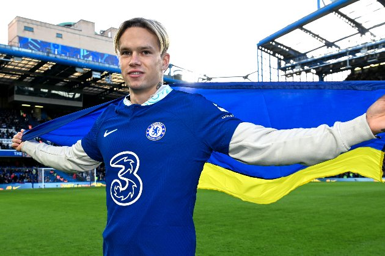

Мудрик Михайло Петрович
Михайло Петрович Мудрик - (нар. 5 січня 2001, Красноград, Харківська область) — український футболіст, лівий вінгер лондонського «Челсі» і збірної України.
Зміст
- Життєпис
- Клубна кар'єра
- Шахтар
- Челсі
- Досягнення
Життєпис
Михайло Мудрик народився у Краснограді на Харківщині.
Клубна кар'єра
Шахтар
В основі «Шахтаря» дебютував 31 жовтня 2018 року, замінивши Жуніора Мораеса на 69-й хвилині матчу 1/8 фіналу Кубка України проти донецького «Олімпіка».
Наприкінці лютого 2019 року на правах оренди перейшов до складу київського «Арсенала», а вже 3 березня дебютував у Прем'єр-лізі у грі проти того ж «Олімпіка», вийшовши на 87-й хвилині замість Владислава Калітвінцева.
На сезон 2019/20, після закінчення орендної угоди з «Арсеналом», повернувся до донецького «Шахтаря».
Наприкінці сезону, коли донецька команда вже забезпечила собі «золото» національної першості, провів три матчі
за «основу» у Прем'єр-лізі.
З початком нового сезону Мудрик став лідером «Шахтаря», у якого були великі кадрові зміни через відхід легіонерів. За осінню частину чемпіонату України він забив 7 голів та віддав 7 гольових передач у 12 матчах. Гравець також проявив себе у Лізі чемпіонів, забивши 3 голи та віддавши 2 гольові передачі у 6 матчах. Його голи у ворота «Селтіка» двічі допомогли «Шахтарю» уникнути поразки. За підсумками 2022 року став найкращим гравцем «Шахтаря», а також став найкращим українським футболістом за версією газети «Український футбол»
Челсі
Досягнення
Командні
- Шахтар
- Чемпіон України: 2019/20
- Володар Суперкубка України: 2021
Індивідуальні
- Футболіст року в Україні за версією сайту газети «Український футбол»: 2022
- Премія «Золотий талант України»: 2021